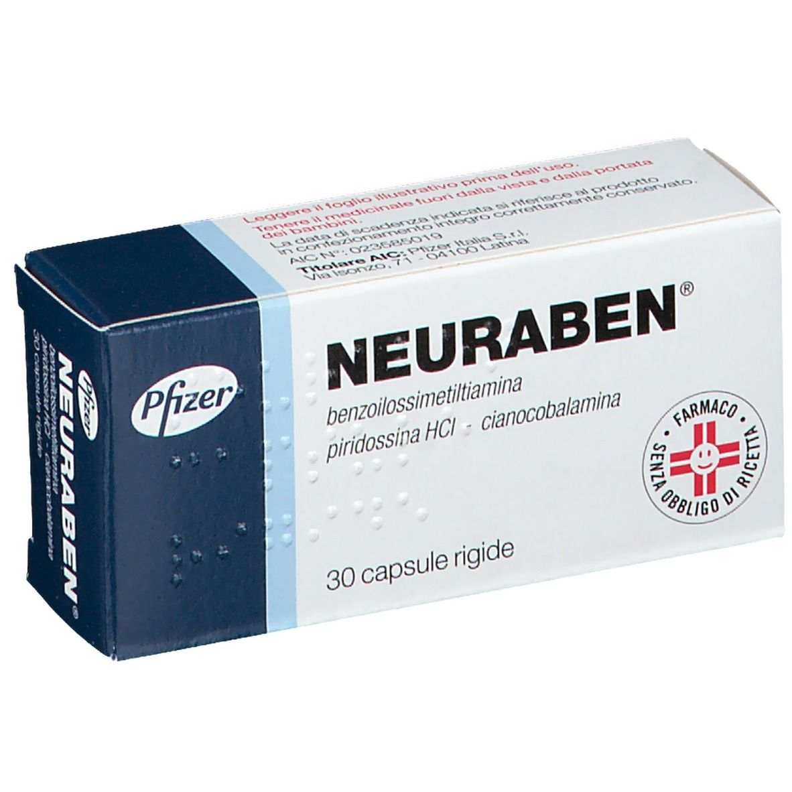

Контактна інформація:
Ціна: Уточнювати у менеджера
Під замовлення
Виробник: Італія
Ціна: Уточнювати у менеджера
Під замовлення
Саме в FarmItal ви можете купити неурабен,neuraben, вытамыни групи B в Україні, Гарантовано Якісний!
Доставка Neuraben капсули, вітамінів групи B здійснюється транспортними компаніями, терміни виконання замовлення обумовлюються менеджером Фармітал. Ви можете замовити Неурабен капсули у містах: Одеса, Херсон, Чернігів, Сєверодонецьк, Бердянськ, Бровари, Дніпро, Вінниця, Київ, Слов'янськ, Полтава, Краматорськ, Біла Церква, Кам'янське, Маріуполь, Чернівці, Олександрія, Кам'янець-Подільський, Львів, Запоріжжя, Кропивницький, Житомир, Івано-Франківськ, Суми, Черкаси, Костянтинівка, Мелітополь, Кривий Ріг, Рівне, Луцьк, Нікополь, Павлоград, Ужгород, Кременчук, Лисичанськ, Хмельницький, Тернопіль, Харків, Миколаїв, а також в інших населених пунктах України.
Капсули.
Neuraben Капсули - це препарат, який використовується для лікування поліневриту від carenziali З вмістом вітаміну В1, В6 і В12 та лікування псоріазу викликаючи заспокійливий ефект необхідний при даній хворобі.
Лікування гострих нападів подагри та профілактика гострих нападів подагри під час початкового лікування препаратами алопуринолу або препаратами, що сприяють виведенню сечової кислоти.
Підвищена чутливість до компонентів лікарського засобу.
Neuraben Капсули слід приймати в наступних дозах та режимі: по 1 капсулі 3 рази на день.
Самолікування може бути шкідливим для вашого здоров'я! Перед початком лікування зверніться до вашого лікаря!!
Neuraben, як правило, добре переноситься і не викликає токсичних ефектів та накопичення в організмі.
Не має наявних симптомів при передозуванні.
Не існує протипоказань до використання Неурабен у період вагітності.
Зберігати у недоступному для дітей місці. Не потребує особливих умов зберігання.
не використовувати препарат після терміну придатності, вказаного на упаковці.
Benzoilossimetiltiamina 100 мг, Піридоксин гідрохлорид 150 м, Ціанокобаламін 500 мкг
Тальк, магнію стеарат, поліетиленгліколь 6000, Титану діоксид (Е171), помаранчевий середній (Е110), желатин